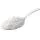
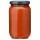

INGREDIENTES
 200 ml de leite de coco
200 ml de leite de coco- 3 ovos
 2 xícaras (chá) de leite (500 ml)
2 xícaras (chá) de leite (500 ml) 1 xícara (chá) de óleo (250 ml)
1 xícara (chá) de óleo (250 ml) 1 ½ xícara (chá) de farinha de trigo
1 ½ xícara (chá) de farinha de trigo 3 colheres (sopa) de amido de milho
3 colheres (sopa) de amido de milho- 1 colher (sopa) de fermento em pó
 Sal a gosto
Sal a gosto
Recheio:
 1 cebola média
1 cebola média 10 azeitonas verdes
10 azeitonas verdes- 1 xícara (chá) de molho de tomate
 250 g de presunto picado
250 g de presunto picado 300 g de mussarela picada
300 g de mussarela picada- Sal a gosto
Modo de preparo
Tempo: 1 hora e 40min
Massa
- Bata no liquidificador 200 ml de leite de coco, 3 ovos, 2 xícaras (chá) de leite, 1 xícara (chá)
de óleo, 1 ½ xícara (chá) de farinha de trigo, 3 colheres (sopa) de amido de milho, 1 colher
(sopa) de fermento em pó e sal a gosto.
- Reserve.
Recheio
- Pique 1 cebola média e 10 azeitonas verdes.
- Acrescente 1 xícara (chá) de molho de tomate, 1 colher (sopa) de orégano e sal a gosto.
- Reserve.
Montagem do bauru:
- Unte uma forma (28 cm x 19 cm x 5 cm) com margarina e polvilhe a farinha de trigo.
- Reserve.
- Coloque a metade da massa na forma, acrescente 250 g de presunto e 300 g de mussarela picados e
o recheio reservado.
- Cubra com o restante da massa.
- Salpique queijo parmesão ralado e orégano a gosto.
- Coloque na forma e leve ao forno (em temperatura média) para assar por 45 minutos.